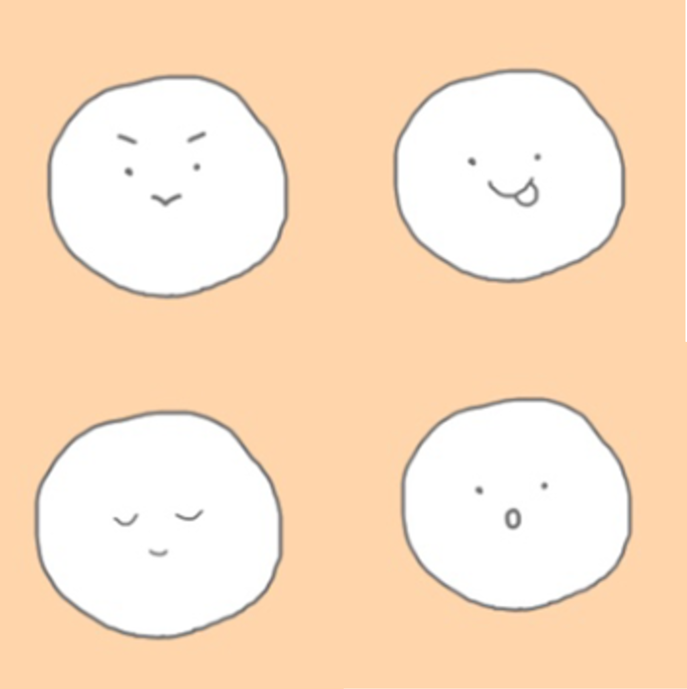

ニックネーム 「まる。」
ニックネーム「まる。」の始まりはSNS
アイコンをどうしようか考えあぐねていると、
絵をかくのがうまい友達が、右のような絵をくれました！
以降まる。はこのアイコンをあらゆるSNSに用いていると、
周りのほとんどの友達が自分を「まる」と呼ぶようになりました
最後に「。」をつけなくてはいけない理由ですが、
これはただ「まる」だとさみしいなあとおもった自分が
「。」をつけてみると意外にも気に入りすぎてしまった！
それだけの理由です(笑)

【Let's FOLLOW ME!!】


このまる。の写真がかわいいと思う人→→→
(´；ω；`)ｳｯ…